금형기능사 (2004-02-01 기출문제)
1과목: 임의구분
1. 원통 드로잉을 하였을 때 용기의 선단부분에 불규칙하게 늘어난 부분이 생긴다. 그 이유 설명으로서 가장 적합한 것은?
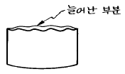
- 불순물이 지나치게 많으므로
- 드로잉 속도가 지나치게 빠르므로
- 드로잉 형의 상형과 하형이 맞지 않으므로
- 압연판이 이방성이 있기 때문에
(정답률: 50%)

2. 주전자나 물통 등의 볼록 형상을 만들기 위하여 수직으로 드로잉된 용기의 측벽을 볼록하게 하는 가공은?
- 벌징 가공
- 엠보싱 가공
- 인발 가공
- 블랭킹 가공
(정답률: 47%)
3. 순차 이송 금형의 설명 중 틀린 것은?
- 제품의 정밀도가 극도로 높은 것도 제작이 가능하다.
- 복잡한 형상의 제품을 몇 개의 공정으로 나누어 견고한 금형을 만들 수 있다.
- 드로잉가공이나 굽힘 성형가공을 포함하는 금형도 무리없이 가공할 수 있다.
- 가공속도가 어떤 작업이나 타 금형에 비해 우수하다.
(정답률: 55%)
4. 다음 프레스 가공법 중 굽힘 가공에 속하는 것은?
- 엠보싱 가공
- 슬리팅 가공
- 피어싱 가공
- 사이징 가공
(정답률: 43%)
5. 두께가 0.6 ㎜인 제품을 가공시 전단력이 3,500 ㎏f이였다면 스트립을 빼는 힘[stripping force]은? (단, 스트립 상수는 6% 이다.)
- 150 ㎏f
- 180 ㎏f
- 210 ㎏f
- 240 ㎏f
(정답률: 53%)
6. 다음 중 동력 프레스에 해당되지 않는 것은?
- 크랭크 프레스
- 너클 프레스
- 유압 프레스
- 나사 프레스
(정답률: 46%)
7. 굽힘 제품의 판 두께가 얇은 경우에는 굽힘부분에서 강도가 낮고, 힘을 가하면 쉽게 변형되기 때문에 이를 방지하기 위해서 다음 중 어떻게 하면 가장 좋은가?
- 비드 설치
- 엠보싱 처리
- 리브 설치
- 굽힘 반지름의 최소화
(정답률: 49%)
8. 다음 중 버(burr) 제거방법에 해당되지 않는 것은?
- 워터젯트
- 화학적 버제거
- 배럴 연마
- MCT 가공
(정답률: 77%)
9. 프레스 작업전 점검사항 중 안전에 가장 중요한 것은?
- 펀치의 점검
- 동력의 점검
- 다이의 점검
- 클러치의 점검
(정답률: 63%)
10. 스트리퍼가 하형에 붙어있는 역방향 스트리퍼는 주로 어떤 금형에 사용되는가?
- 컴파운드 금형
- 블랭킹 금형
- 순차이송 금형
- 피어싱 금형
(정답률: 45%)
11. 성형기의 노즐로 부터 사출된 용융 수지를 스프루에서 게이트까지 인도하는 통로를 무엇이라 하는가?
- 게이트(Gate)
- 슬러그 웰(Slug well)
- 러너(Runner)
- 스프루(Sprue)
(정답률: 66%)
12. 사출성형 금형의 파팅 라인을 정하는데 적당하지 않는 것은?
- 눈에 잘 띄지 않는 위치에
- 금형열림 방향에 수평인 평면에
- 마무리가 잘 될 수 있는 위치에
- 게이트 위치 및 그 형상을 고려하여
(정답률: 50%)
13. 사출성형품의 표면에 뱀이 지나가는 것과 같이 구불구불한 모양의 결함은?
- 흑줄
- 제팅
- 플로마크
- 크레이징
(정답률: 44%)
14. 파팅 라인(parting line)부의 플래시(flash)발생 원인으로 틀린 것은?
- 형체결력 부족
- 사출압력이 높다.
- 수지 공급이 과다
- 수지의 유동성 불량
(정답률: 38%)
15. 사출금형 검사 중 각부의 끼워맞춤 정도 및 체결 상태 등을 검사하는 것은?
- 조립 검사
- 정밀도 검사
- 구조 치수 검사
- 공작 상태와 외관 검사
(정답률: 74%)
16. 길이가 250mm인 성형사출물의 성형 수축율을 3/1000 이라하면 상온에서 금형의 치수는 얼마로 가공하여야 하는가?
- 248.75mm
- 247.25mm
- 250.75mm
- 250.25mm
(정답률: 69%)
17. 다음 중 열경화성 수지는?
- 페놀(Phenol)
- 폴리카보네이트(PC)
- 폴리프로필렌(PP)
- 폴리에틸렌(PE)
(정답률: 65%)
18. 사출성형시 성형품을 밖으로 빼내주는 역할을 하는 금형 부품은?
- 스톱 핀(stop pin)
- 리턴 핀(return pin)
- 이젝터 핀(ejector pin)
- 스프루 록 핀(sprue lock pin)
(정답률: 74%)
19. 다음 그림은 같은 사출금형 부품의 부품명은?
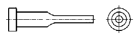
- 리턴 핀(return pin)
- 이젝터 핀(ejector pin)
- 스프루로크 핀(sprue lock pin)
- 피어싱 펀치(piercing punch)
(정답률: 65%)
20. 사출성형의 특징 중 단점이 아닌 것은?
- 금형비가 저렴하다.
- 공정관리가 어렵다
- 성형기계와 부속장치의 가격이 비싸다.
- 사출성형직 후 성형품의 품질을 규정하기가 어렵다.
(정답률: 63%)
2과목: 임의구분
21. 마이크로 메터를 평행광선 정반으로 평행도를 측정하니 그림과 같은 간섭무늬가 생겼다. 올바르게 설명한 것은?
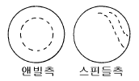
- 스핀들과 앤빌측이 평면이고 평행이다.
- 앤빌측은 대체로 평면이고 스핀들 측은 경사져 있다.
- 앤빌측과 스핀들측 모두 중앙이 높다.
- 앤빌측은 중앙이 높고 스핀들측은 R 이져 있다.
(정답률: 68%)
22. 콘터머신에서 톱작업의 기준이 아닌 것은?
- 절삭속도가 빠를수록 절삭면은 양호하다.
- 공작물이 두꺼울수록 톱날은 큰피치를 필요로 한다.
- 공작물이 고무와 같을수록 톱날은 큰피치를 필요로 한다.
- 공작물이 얇을수록 톱날의 피치는 큰 것을 사용한다.
(정답률: 65%)
23. 기계의 분해조립에 많이 사용되는 스패너의 사용법으로서 올바른 방법인 것은?
- 스패너의 입에 너트가 맞지 않을 때는 쐐기를 이용하여 돌린다.
- 스패너는 밖으로 밀어내면서 죄면 비교적 안전하다.
- 스패너는 둔각을 이루는 상태에서 사용하면 비교적 안전하다.
- 스패너로 조일 때 힘이 들면 파이프 등을 사용해서 작업을 한다.
(정답률: 60%)
24. 탄소강을 불꽃으로 부분 가열, 급냉시켜 표면만 단단하게 경화시키는 표면방법은?
- 침탄법
- 질화법
- 저온 염욕 질화법
- 화염경화법
(정답률: 72%)
25. 화학가공 작업의 안전사항으로 옳지 않는 것은?
- 반드시 고무장갑을 착용한다.
- 약품이 피부에 접촉되었을시 신속히 비눗물로 세척한다.
- 방진 마스크를 착용한다.
- 방독 마스크를 착용한다.
(정답률: 67%)
26. 정으로 홈을 따내려고 할 때 안전 작업이 아닌 것은?
- 해머에 쐐기를 박는다
- 파편이 튀지 않게 칸막이를 한다
- 장갑을 끼고 작업한다
- 정의 거스러미를 제거하여 사용한다
(정답률: 63%)
27. 밀링작업에서 칩의 제거는 무엇으로 하는 것이 안전한가?
- 걸레
- 브러시
- 맨손
- 장갑 낀 손
(정답률: 84%)
28. 유백색,불투명 범용수지로 성형성이 좋고 범용수지 중에서 제일 가볍고 내약품성이 좋고 내충격성이 강하며 힌지(hinge)성이 좋고 세탁기,배터리,TV와 카세트케이스,단자,배선기구에 사용하는 결정성 수지는?
- 폴리프로필렌
- 폴리에틸렌
- 폴리스티렌
- 폴리염화비닐
(정답률: 48%)
29. 방전 가공의 특징을 설명한 것으로 부적절한 것은?
- 공구 전극이 필요없다.
- 가공 부분에 변질층이 남는다
- 무인 가공이 가능하다
- 전극 형상대로 정밀도 높은 가공을 할 수 있다
(정답률: 55%)
30. 금긋기한 후에 가공도중 금긋기선이 지워지지 않도록 흔적을 남기기 위하여 펀치의 각도를 50° 로 하여 사용하는 수공구는?
- 펀치(punch)
- 쎈터펀치(center punch)
- 도팅펀치(dotting punch)
- 트로멜(trommel)
(정답률: 52%)
31. 다음은 해머 사용시의 유의사항이다. 틀린 것은?
- 쐐기를 박아서 자루가 단단한 것을 사용한다.
- 장갑이나 기름묻은 손으로 자루를 잡지 않는다.
- 담금질한 것은 세게 힘을 주어 두드린다.
- 작업전에 정비상태의 이상유무를 점검한 후 사용한다
(정답률: 78%)
32. 콘토 머신 작업의 안전에 대한 것 중 틀린 것은?
- 장갑을 착용하지 않는다.
- 줄작업은 불가능하다.
- 톱날 용접시 보안경을 착용한다.
- 재질에 따라 속도와 피치를 선정한다.
(정답률: 67%)
33. 12mm드릴로 깊이 56mm의 구멍을 뚫으려 한다. 이 구멍을 가공하는데 소요되는 시간은 약 몇 분 정도인가? (단, 드릴의 1회전당 이송은 0.04mm, 회전수가 540rpm, 드릴 원추높이는 3mm 이다.)
- 2.73min
- 3.73min
- 4.73min
- 5.73min
(정답률: 30%)
34. 신속한 고정과 풀림이 이루어지며 공작물의 장착과 장탈이 용이하고 작용력에 비하여 체결 압력이 큰 클램프는?
- 토글 클램프
- 동력 클램프
- 캠 클램프
- 나사 클램프
(정답률: 56%)
35. CNC 공작기계에서 시험절삭 후 오차 수정방법이 아닌 것은?
- 오프셋(offset)량 수정
- 좌표계 설정 수정
- 공작물 좌표계 사용
- 기계원점 좌표계 수정
(정답률: 64%)
36. 절삭공구가 가져야 할 기계적 성질로 가장 올바른 것은?
- 취성, 내열성, 인성, 절연성
- 고온경도성, 내충격성, 자성
- 내식성, 내열성, 담금성, 취성
- 내마모성, 강인성, 고온경도성
(정답률: 80%)
37. 다음 중 너트의 풀림방지에 이용되는 핀은 어느 것인가?
- 분할핀
- 평행핀
- 코터핀
- 테이퍼핀
(정답률: 63%)
38. 사출성형용 금형재료로 값이 싸고 가공성이 좋은 강으로 상원판, 하원판, 스트리퍼 플레이트, 로케이트링 등의 부품가공에 폭 넓게 사용되는 재료는?
- SB
- SM
- STS
- SNC
(정답률: 64%)
39. 압축가공용 재료의 선택시 소착방지를 위하여 고려해야할 사항으로 가장 부적합한 것은?
- 재료의 가공경화
- 피 절삭성
- 표면의 청정도
- 재료의 피 윤활성
(정답률: 26%)
40. 롤링 베어링의 내륜이 고정되는 곳은?
- 저널
- 하우징
- 끝저널
- 리테이너
(정답률: 51%)
3과목: 임의구분
41. 축의 원주에 많은 키를 깎은 것으로 큰 토크를 전달시킬 수 있고, 내구력이 크며, 보스와의 중심축을 정확하게 맞출 수 있는 키는?
- 성크 키
- 반달 키
- 접선 키
- 스플라인 키
(정답률: 63%)
42. 황동에 Pb 1.5∼3.7%을 첨가하여 절삭성을 좋게한 합금을 무엇이라 하는가?
- 쾌삭 황동
- 강력 황동
- 문쯔메탈
- 톰백
(정답률: 79%)
43. 잇수 40개, 피치원의 지름 320 ㎜인 기어의 모듈 값은?
- 4
- 8
- 12
- 6
(정답률: 84%)
44. 주철이 갖고 있는 성질 중 가장 우수한 기계적 성질은?
- 압축 강도
- 인장 강도
- 전단 강도
- 충격 강도
(정답률: 43%)
45. 응력의 단위를 올바르게 표시한 것은?
- kgf/mm3
- m /s2
- kgf.mm
- N/mm2
(정답률: 70%)
46. 하중에 의하여 일정한 방향의 회전에 한하여 자동적으로 브레이크 작용을 하는 것은?
- 블록 브레이크
- 밴드 브레이크
- 자동 브레이크
- 축압 브레이크
(정답률: 73%)
47. 다음 중 주로 휨 하중을 받는 스프링은?
- 원판 스프링
- 판 스프링
- 인장 코일 스프링
- 압축 코일 스프링
(정답률: 44%)
48. 시편의 표점거리를 110 mm, 지름 20 mm, 최대하중 5,000kgf 에서 시편이 절단되었을 때 연신율은? (단, 늘어난 길이 △ℓ = 22 mm이다.)
- 10 %
- 15 %
- 20 %
- 25 %
(정답률: 55%)
49. 온도 변화에 따라 선팽창계수나 탄성률 등의 특성이 변화하지 않는 합금강은?
- 내열강
- 쾌삭강
- 불변강
- 내마멸강
(정답률: 71%)
50. 응력집중 값이 커지는 경우가 아닌 것으로 가장 적당한 것은?
- 둥근 재료의 곡률 반지름이 작을수록
- 홈의 각도가 작을수록
- 홈의 코너부 R값이 클수록
- 홈이 깊을수록
(정답률: 46%)
51. 굵은 일점 쇄선으로 표시되어 있을 경우, 다음 중 우선적으로 검토해야 할 사항은?
- 기어의 피치선인가 여부
- 인접부분을 참고로 표시하였나 여부
- 특수 가공을 지시하는 선인가 여부
- 이동 위치를 표시하고 있는가 여부
(정답률: 79%)
52. 축의 치수가
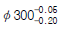
, 구멍의 치수가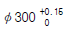
인 헐거운 끼워마춤에서 최소틈새는?- 0
- 0.2
- 0.15
- 0.⑤
(정답률: 63%)
53. 가공 줄무뉘 방향기호에서
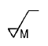
의 설명으로 가장 적합한 것은?- 가공으로 생긴 선이 방사상
- 가공으로 생긴 선이 거의 동심원
- 가공으로 생긴 선이 두방향으로 교차
- 가공으로 생긴 선이 다방면으로 교차 또는 무방향
(정답률: 72%)
54. 베어링에서 63⑤ 의 안지름은 몇 mm 인가?
- 25
- 30
- 15
- 35
(정답률: 82%)
55. 3각법으로 그린 투상도 중 잘못된 투상이 있는 것은?
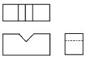
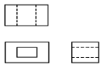
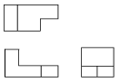
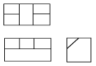
(정답률: 62%)
56. 보기 입체도를 3각법으로 올바르게 투상한 것은?
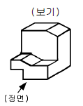
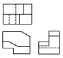
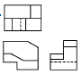
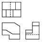
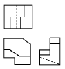
(정답률: 65%)
57. 기계제도 도면에서 치수 수치 앞에 알파벳 소문자 티(t)가 붙여져 있다. 치수 앞의 기호 t 가 의미하는 것은?
- 모따기
- 판의 두께
- 구의 지름
- 정사각형의 변
(정답률: 78%)
58. 보기와 같이 직각도 공차를 최대실체공차방식으로 나타낸 경우 최대로 허용되는 직각도 공차는 얼마인가?
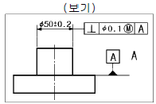
- 0.1
- 0.2
- 0.4
- 0.5
(정답률: 40%)
59. 보기 도면은 어떤 물체를 제3각법으로 투상한 정면도와 우측면도이다. 평면도로 가장 적합한 것은?
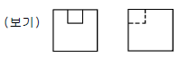
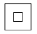
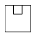
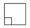
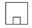
(정답률: 78%)
60. 테이퍼 핀의 호칭지름을 나타내는 부분은?
- 작은 쪽의 지름
- 굵은 쪽의 지름
- 중간부분의 지름
- 핀 구멍 지름
(정답률: 64%)